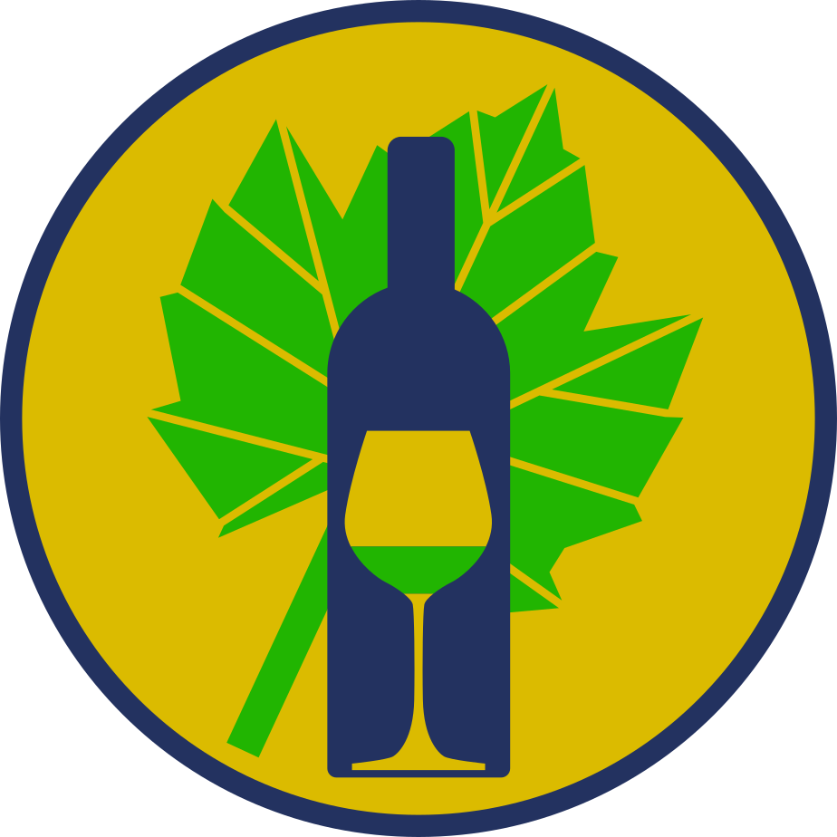
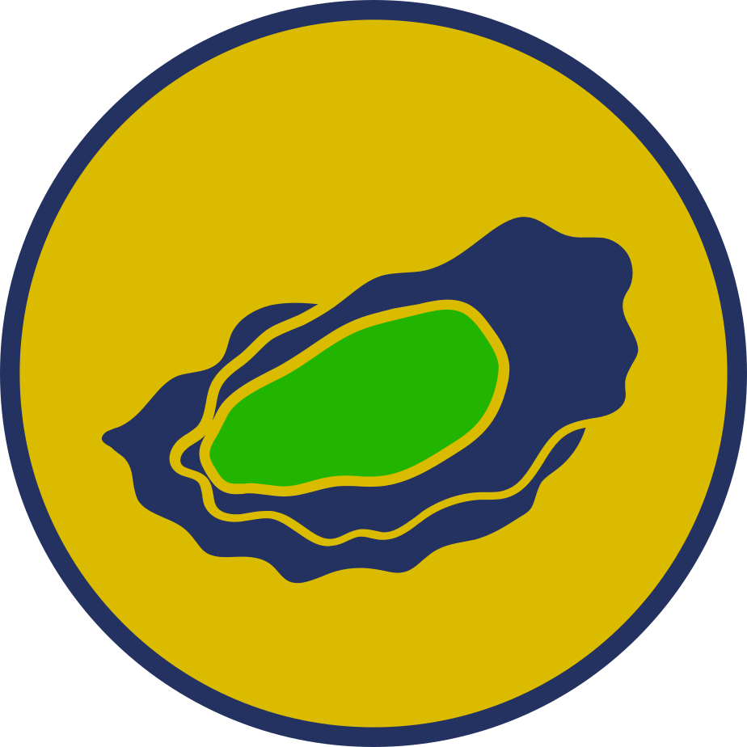
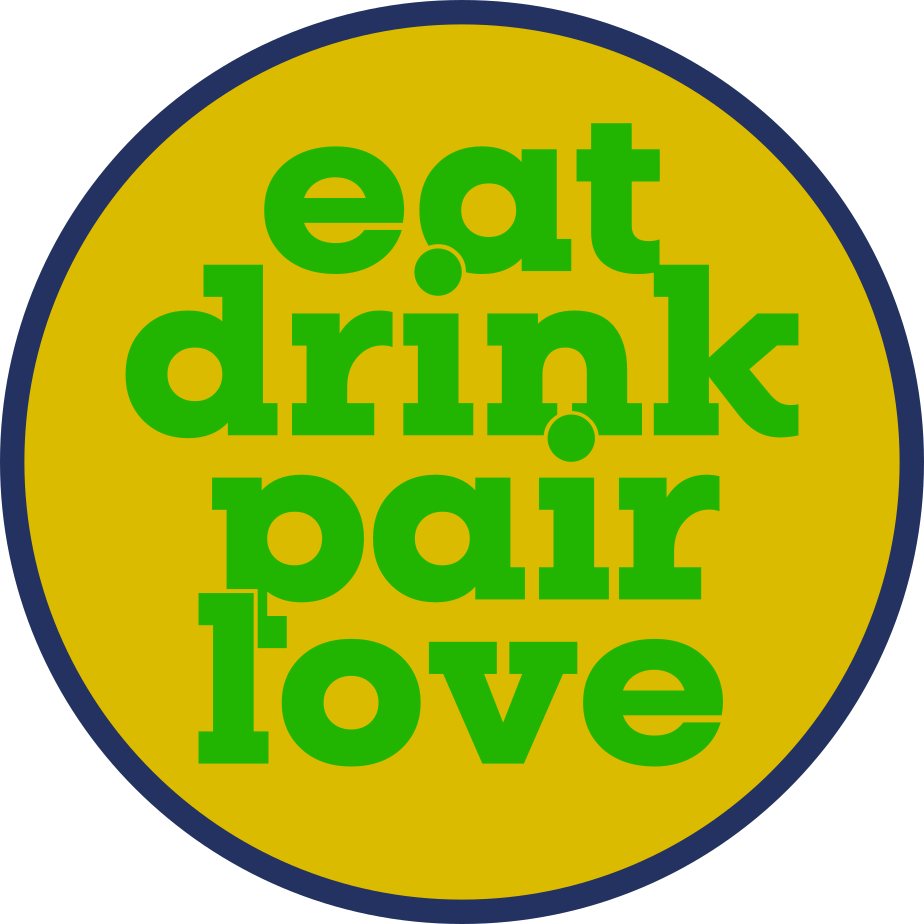

04 — Mark
the icon system
The church icon and illustrated set keep their original three-color palette. They're the one place green lives. In the UI, everything else is navy and gold.

TastingWorkshops
Market

OystersSake

Pairing